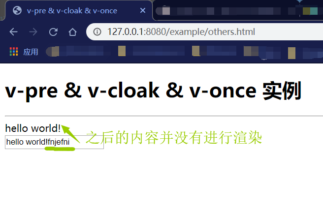

Vue2.0 【第一季】 第8节 v-pre & v-cloak & v-once
v-pre 指令
在模板中跳过vue的编译，直接输出原始值。就是在标签中加入v-pre就不会输出vue中的data值了。
html代码：
1 | <div v-pre>{{message}}</div> |
这时并不会输出我们的message值，不进行渲染，而是直接在网页中显示
v-cloak 指令
在vue渲染完指定的整个DOM后才进行显示。它必须和CSS样式一起使用：
可以使用 v-cloak 指令设置样式，这些样式会在 Vue 实例编译结束时，从绑定的 HTML 元素上被移除。
1 | <div v-cloak>{{message}}</div> |
当网络较慢，网页还在加载 Vue.js ，而导致 Vue 来不及渲染，这时页面就会闪现出 Vue 源代码，再显示渲染的内容。
我们可以使用 v-cloak 指令来解决这一问题：
html代码：
1 | <div id="app" v-cloak> |
style中，css代码：
1 | [v-cloak] { |
这样就会解决屏幕闪动的问题。
v-once 指令
在第一次DOM时进行渲染，渲染完成后视为静态内容，跳出以后的渲染过程。（相当于只渲染一次）
1 | <div v-once>第一次绑定的值：{{message}}</div> |
浏览器效果：

Alt text